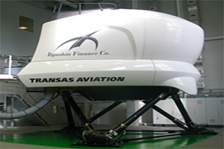

Комплексный тренажер
Комплексный тренажер Ан-148 («КТС Ан-148») разработан и построен российской компанией ЗАО «Транзас» (Санкт-Петербург) по заказу лизинговой компании ОАО «Ильюшин Финанс Ко.». Это первый в России тренажер отечественного производства, соответствующий уровню «D» - наивысшему уроню классификации авиационных тренажеров по международным стандартам, позволяющий осуществлять подготовку летного персонала без тренировок на реальном самолете.



Комплексный (Full Flight Simulator - FFS) тренажер - это пилотажный тренажер, который имеет систему подвижности, имитирующую полет самолета, оборудован кабиной полностью соответствующей кабине пилотов реального воздушного судна, имеет совершенную систему визуализации и предназначен для отработки комплексных навыков выполнения полетов.
Обучение
| Наземная подготовка(теория) | 120 часов |
| Тренировка на процедурном тренажере (в составе летного экипажа) | 20 часов |
| Тренировка на комплексном тренажере (в составе летного экипажа) | 40 часов |
| Теоретическая подготовка(теория) | 80 часов |
| Предоставление инструктора для проведения обучения по программе, на комплексном тренажере Ан-148 | 16 часов |
| Предоставление пилота-инструктора для проведения сессий «LOFT» на комплексном тренажере Ан-148 по программе | 4 часа |
| Предоставление комплексного тренажера Ан-148 по программе | 4 часа |
| Теоретическая подготовка(теория) | 40 часов |
| Предоставление инструктора на процедурный тренажер. | 12 часов |
| Модуль 1 (теоретическая подготовка) | 40 часов |
| Модуль 2 (практическая подготовка) | 17 часов |
| Модуль 3 (дополнительная подготовка) | 22 часа |
| Модуль 4 (подготовка к выполнению международных полетов) | 176 часа |
- *Продолжительность подготовки по Курсам повышения квалификации летного состава на ВС Ан-148 может быть изменена в случае с внедрением дистанционных образовательных технологий.
| № п.п. | Наименование дисциплин | Всего, час. | Лекции | Практические занятия | Самостоятельная подготовка | Форма контроля |
|---|---|---|---|---|---|---|
| 1. | Нормы и требования охраны труда | 2 | 1 | - | 1 | - |
| 2. | Конструкция и эксплуатация систем и оборудования ВС. | 12 | 8 | 4 | - | Экзамен |
| 3. | Бытовое оборудование ВС и его эксплуатация. | 2 | 1 | 1 | - | Экзамен |
| 4. | Технология обслуживания пассажиров на борту ВС. Организация питания на борту ВС. | 8 | 1 | - | 7 | Экзамен |
| 5. | Аварийно-спасательная подготовка. Бортовое аварийно-спасательное оборудование. * | 16 | 6 | 10 | - | Экзамен |
| Итого | 40 | 17 | 15 | 8 | Экзамен |
- * При проведении занятий по дисциплине «Аварийно-спасательная подготовка. Бортовое аварийно-спасательное оборудование» используется программа по аварийно-спасательной подготовке членов летного и кабинного экипажа ВС Ан-148, утвержденная в установленном порядке.
Курс повышения квалификации бортпроводников, выполняющих полеты на воздушном судне Ан-148 на МВЛ и ВВЛ:
| № п.п. | Наименование дисциплин | Всего, час. | Лекции | Практические занятия | Форма контроля |
|---|---|---|---|---|---|
| 1. | Основы воздушно-правовой подготовки. | 4 | 4 | - | Зачет |
| 2. | Конструкция и эксплуатация систем и оборудования ВС. Бытовое оборудование ВС и его эксплуатация. (1) | 8 | 4 | 4 | Зачет |
| 3. | Аварийно-спасательная подготовка. (2) | 16 | 8 | 8 | Зачет |
| 4. | Перевозка опасных грузов воздушным транспортом. (3) | 12 | 11 | 1 | Зачет |
| 5. | Организация перевозок на воздушном транспорте. | 4 | 4 | - | Зачет |
| 6. | Специальная подготовка в области человеческого фактора (CRM Training). | 4 | 4 | - | Зачет |
| 7. | Обеспечение авиационной безопасности. (4) | 8 | 8 | - | Зачет |
| 8. | Медицинское обслуживание (оказание первой доврачебной помощи на борту ВС). | 8 | 6 | 2 | Зачет |
| 9. | Технология обслуживания пассажиров. Организация питания на борту. Психология общения. | 8 | 4 | 4 | Зачет |
| 10. | Профессиональный английский язык. | 8 | 4 | 4 | Зачет |
| Итого | 80 | 57 | 23 | Зачет |
- (1) Указанное количество часов при изучении одного из заявленных типов ВС.
- (2) Указанное количество часов при изучении одного типа ВС.
- (3) При проведении занятий по дисциплине «Перевозка опасных грузов воздушным транспортом» используется программа повышения квалификации членов экипажа (кроме членов летного экипажа) по курсу «Перевозка опасных грузов воздушным транспортом» (11 категория ИКАО), утвержденная в установленном порядке.
- (4) При проведении занятий по дисциплине «Обеспечение авиационной безопасности» используется программа повышения квалификации членов экипажа по курсу «КПК по авиационной безопасности членов экипажей», утвержденная в установленном порядке.
- *Продолжительность подготовки по Курсам повышения квалификации летного состава на ВС Ан-148 может быть изменена в случае с внедрением дистанционных образовательных технологий.
Занятия по дисциплине «Аварийно-спасательная подготовка» включают в себя занятия по АСП - водная подготовка. При изучении дополнительного типа ВС, время на обучение по дисциплине «Аварийно-спасательная подготовка» составляет:
2 типа ВС – 20 часов
3 типа ВС – 24 часа
4 типа ВС – 28 часов
При проведении занятий по дисциплине «Аварийно-спасательная подготовка» используется программа по Ежегодной аварийно-спасательной подготовки членов летного и кабинного экипажа ВС Ан-148, утвержденная в установленном порядке.
Программа изучения и практического освоения регламентных работ по авиационному и радиоэлектронному оборудованию самолета Ан-148 инженерно-техническим персоналом:
| № п.п. | Наименование дисциплин | Количество академических часов | Лекции | Практика |
|---|---|---|---|---|
| 1. | Электрооборудование самолёта АН-148 | 57 | 53 | 4 |
| 2. | Приборное оборудование самолёта АН-148 | 57 | 53 | 4 |
| 3. | Радио оборудование самолёта АН-148 | 57 | 53 | 4 |
| 4. | Конструкция самолёта АН-148 | 4 | 4 | |
| 5. | Конструкция двигателей и ВСУ | 3 | 3 | |
| 6. | Основы практической Аэродинамики | 2 | 2 | - |
| Всего: | 180 | 168 | 18 |
Распределение времени теоретической переподготовки инженерно – технического персонала по ЛАиД на самолет Ан-148:
| № п.п. | Наименование дисциплин | Количество часов |
|---|---|---|
| 1. | Конструкция самолета Ан-148 | 83 |
| 2. | Конструкция двигателя Д-436-148 и ВСУ АИ-450 МС | 71 |
| 3. | Электрооборудование самолета Ан-148 | 10 |
| 4. | Приборное оборудование самолета Ан-148 | 6 |
| 5. | Радиооборудование самолета Ан-148 | 8 |
| 6. | Основы практической аэродинамики самолета Ан-148 | 2 |
| Итого: | 180 |
О самолете
Ан-148 — ближнемагистральный пассажирский самолёт, рассчитанный на перевозку от 68 до 85 пассажиров. Разработан в ОКБ им. О.К. Антонова. Производится на Воронежском акционерном самолётостроительном заводе и Киевском заводе Авиант.


Максимальная дальность полёта:
— 4400 км, с 75 пассажирами (Ан-148-100Е);
— до 7000 км, с установкой дополнительных топливных баков (Ан-168).
Крейсерская скорость — 820–870 км/ч.
В России продажей, поставками в финансовый и операционный лизинг этих самолётов занимается лизинговая компания Ильюшин Финанс Ко (ОАО "ИФК"). Сертификат типа самолёта выдан Авиарегистром МАК 26 февраля 2007 года и сертифицирован по нормам АП-25 и CS-25.
| Тип | Описание |
|---|---|
| Ан-148-100А | Вариант пассажирского самолёта малой дальности. Самолёт рассчитан на перевозку 70-85 пассажиров на дальность 2000—3000 км. |
| Ан-148-100B | Вариант самолёта увеличенной дальности, расчитан на перевозку 70-85 пассажиров. Дальностью полета до 3600 км. |
| Ан-148-100Е | Самолёт с пассажировместимостью 70-85 человек, с дальностью полета до 5000 км. |
| Ан-158 | Вариант самолёта с удлинённым фюзеляжем и увеличенной максимальной коммерческой нагрузкой до 9800 кг. на 99 человек и дальностью полёта: 2500 км с 99 пассажирами; 3200 км с 86 пассажирами. |
| Ан-168 | Вариант самолёта деловой авиации и с дальностью полета до 7000 км. |
| Ан-168МП | Вариант самолёта патрульной авиации. |
| Ан-178 | Вариант транспортного самолёта на базе Ан-158. |
| АН-148-100А | АН-148-100В | АН-148-100Е | ||
|---|---|---|---|---|
| Пассажировместимость (моноклассная компоновка) | 75 пассажиров (32"), 80 пассажиров (30"), 85 пассажиров (30") с 1-м туалетом | |||
| Практическая дальность полета | 2 100 км | 3 500 км | 4 400 км | |
| Максимальный запас топлива | 12 100 кг | |||
| Крейсерская скорость | 820-870 км/ч | |||
| Высота полета | до 12 200м | |||
| Необходимая длинна ВПП | 1 600 м | 1 800 м | 1 900 м | |
| Высота аэродрома | до 2 100 (3 000 - опцион) м | |||
| Диапазон температур эксплуатации | -55 °C...+45 °C | |||
| Расход топлива | 1 560 кг/ч | 1 600 кг/ч | 1 650 кг/ч | |
| Категории посадки | II (IIIA - опцион) | |||
| Соответствие уровню шума | Глава IV ИКАО | |||
| Максимальный взлетный вес | 38 950 кг | 41 950 кг | 43 700 кг | |
Варианты двухклассной компоновки пассажирской кабины Ан-148


Варианты одноклассной компоновки пассажирской кабины Ан-148